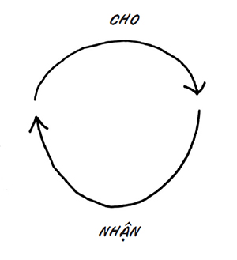
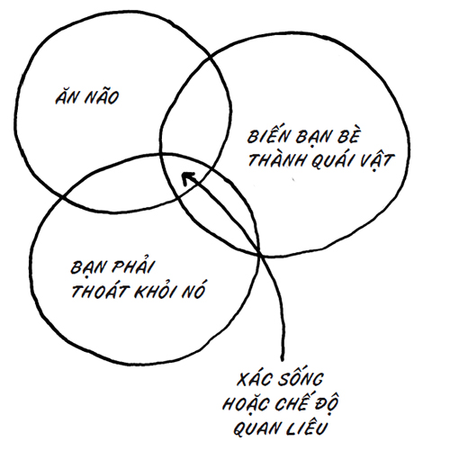

Không thể? Đúng đấy, bắt tay vào việc thôi!
Một nỗ lực ước chừng nhỏ nhất, một sự ghi nhận vô thức qua quýt nhất đã bị rũ bỏ, như thể nó là sự liên tưởng ngờ nghệch về một giấc mơ “chẳng bao giờ thành sự thật”… một hành động vô ích…
Tôi cố thì thầm suy nghĩ đầu tiên của mình (để quỷ dữ không nghe thấy được): “Mình biết đây là chuyện không thể. Nhưng mình biết mình sẽ làm.”
Trong khoảnh khắc đó, các ngọn tháp đã trở thành “các ngọn tháp của tôi”.
Và một lần trên phố, tôi lại bật ra một suy nghĩ mới: Không thể ư? Đúng đấy, bắt tay vào việc thôi!
– trích Man on Wire (Người đi dây) , cuốn nhật ký “phải đọc” về cuộc chinh phục hai tòa Trung tâm Thương mại Thế giới của nghệ sĩ đi dây Philippe Petit
Tất cả những gì bạn từng được dạy và tin tưởng đều được người nghệ sĩ trong Philippe Petit đánh thức.
Bạn không ưa trò phá rào và xâm nhập, không cưỡi trên một trào lưu xâm lăng lớn, không mạo hiểm đời mình, bạn chắc chắn sẽ không làm nếu không có tiền, không hiến dâng đời mình cho thứ gì đó cực kỳ ngu ngốc, nhưng đồng thời cũng thật đẹp đẽ. Đa số chúng ta đều không bắt tay làm điều gì đó bất khả thi. Rõ ràng, đó không phải là một món quà.
Cho đến khi bạn làm.
Và rồi bạn chiến thắng.
Có công việc mới mà không phải ra đi
Một ngày nọ, Binny Thomas đứng lên.
Cô đứng lên, cất tiếng và bắt đầu công việc mới. Cô không rời tổ chức của mình, thậm chí không nhận chức vụ hay trách nhiệm mới. Thay vì thế, cô chỉ làm việc của mình theo một cách mới. Binny không còn đến những cuộc họp để tìm các vấn đề hay khả năng bị bác bỏ để tránh né chúng. Thay vì thế, cô bắt đầu học hỏi và tìm kiếm những dự án mà cô có thể tạo sự khác biệt.
Thật bất ngờ, Binny bỗng có cảm hứng. Cô đang tìm kiếm cơ hội thay vì trốn tránh trách nhiệm. Cô tự mình chấp nhận mạo hiểm, vượt qua điểm thử thách và làm được nhiều việc. Sự thật thú vị (và phổ biến) là các cơ hội chỉ đến sau khi cô tìm được cảm hứng – chứ không phải các cơ hội truyền cảm hứng cho cô.
Công việc cũ của Binny chỉ tạm ổn. Cô thực hiện nó cực kỳ tốt. Cô theo sát bản đồ, tuân thủ chỉ thị, làm những gì mình được bảo và nhận lương xứng đáng. Binny không có nguy cơ mất việc, nhưng cô đã từ bỏ linh hồn mình. Cô đã đạt trạng thái bình ổn, đó cũng là kết thúc. Nhưng rồi, cô đã thay đổi suy nghĩ.
Sáu tuần sau, cô được đề bạt lên một vị trí cao, rồi thăng chức một lần nữa – với công việc mới còn tốt hơn công việc mới mà cô dành cho mình. Binny hiện đang điều hành một chương trình quy tụ các học giả nhiệt thành có quy mô toàn cầu. Tất cả những gì cần ở cô là một lựa chọn. Binny không hề xin phép để làm công việc của mình tốt hơn; cô chỉ quyết định làm thế.
Nhân viên ngân hàng và người phái Amish
Bill O’Brien là nhân viên ngân hàng được yêu mến nhất tại Hạt Lancaster, Pennsylvania. Ông là trưởng bộ phận ngân hàng phụ trách cộng đồng giáo dân Amish 41 tại đây, và ông cho biết mình không bao giờ để một ngôi nhà bị tịch biên.
41 Một nhánh của phái Tin Lành tại Mỹ. (ND)
Bill không thuộc giáo phái Amish, nhưng đa số khách hàng của ông thì có. Ông quản lý các khoản vay với tổng giá trị hơn 100 triệu đô-la cho Ngân hàng HomeTowne Heritage, và ít nhất 90 triệu đô-la trong số này là các khoản thế chấp từ nông trang của người Amish.
Mỗi tuần, O’Brien lái xe hơn cả nghìn dặm, ghé thăm các khách hàng và người vay tiềm năng của ông. Họ không có tiền sử tín dụng, không có bất kỳ công cụ thường gặp nào trong công việc của ông. “Tôi sẽ tìm hiểu xem bố của anh ta là ai”, ông nói. “Tôi cũng hứng thú muốn biết bố vợ anh ta là ai. Phải cần đến một nhóm mới quản lý cả nông trang được.”
Một phần lý do khiến phương thức “cho vay và giữ” của ông thành công đến thế là vì ông không có nhiều lựa chọn. Về luật pháp, ông bị cấm bán lại các khoản vay, vì các ngôi nhà không có điện và không có bảo hiểm sở hữu truyền thống. Kết quả là nếu HomeTowne cho vay, HomeTowne sẽ sở hữu khoản vay đó.
Điều đó đồng nghĩa sau nhiều năm, Bill cơ bản đã trở thành cái tên đầu tiên xuất hiện trong tâm trí của hầu hết các khách hàng của ông. Đây là nhân viên ngân hàng đang kiếm về hàng triệu đô-la mỗi năm cho ngân hàng của mình, làm việc trực tiếp và khiến mỗi mối liên hệ thêm phần nhân văn.
Ông rất dễ tìm được mối làm ăn mới. Cộng đồng giáo dân Amish gắn bó chặt chẽ với nhau, và khi một nông trang mới được mua lại, gia đình mua lại nó chắc chắn sẽ được nghe về Bill. Rất dễ để phá bỏ tất cả những lời đồn đại tích cực đó, và kết quả là Bill phải khiến bản thân ngày càng có trách nhiệm hơn.
Bill không làm chủ ngân hàng. Nhưng ông là người không thể thiếu. Thứ tài sản mà ông đã gây dựng còn giá trị hơn nhiều so với sổ sách kinh doanh của ông. Ông là nòng cốt của ngân hàng cũng như của giáo dân Amish.
John bán bảo hiểm
Tôi đang đứng tại quầy bar của khách sạn, giết thời gian, uống soda và tán gẫu với người phục vụ quầy trước khi lên sân khấu diễn thuyết. Hóa ra anh là một nhân viên bán bảo hiểm toàn thời gian và nhận làm thêm với vai trò phục vụ quầy bar để kiếm thêm chút tiền. Anh bán bảo hiểm cho các doanh nghiệp nhỏ, theo kiểu gõ cửa từng nhà.
John là một cựu chiến binh vừa trở về từ Iraq. Tôi hứng thú với sự cuốn hút của anh và tự hào với dịch vụ anh mang đến, thế nên chúng tôi trò chuyện. Rõ ràng, anh đã đặt sức lao động cảm xúc vào công việc, và do thích thú trước một người vẫn còn bán hàng theo kiểu gõ cửa từng nhà, tôi hỏi John về một ngày làm việc và lương bổng của anh. Hóa ra, toàn bộ thu nhập của anh đến từ tiền hoa hồng, và công ty thực ra còn chẳng cho anh mối khách hàng. Tệ hơn thế, công ty yêu cầu anh phải trả tiền để sử dụng danh thiếp, tài liệu và kịch bản bán hàng của họ. Đó không phải là một công việc hoàn hảo, và chắc hẳn một người với kỹ năng giao thiệp như John có thể làm tốt hơn thế. Anh đã tự đặt mình vào lối mòn, làm việc như thể một hộp thư rác hình người chỉ để nhận một khoản thù lao còm cõi.
Tôi bắt đầu gợi cho anh một số ý tưởng về cách thu thập đầu mối khách hàng tốt hơn, cách tạo ấn tượng tốt hơn khi trình bày, cũng như cách có thể biến vài khách hàng bất chợt thành một nhóm lớn gồm những khách hàng thực sự cam kết.
Và rồi, John đã khiến tôi bất ngờ. Anh giải thích mình không muốn mạo hiểm bất cứ điều gì có thể giúp anh làm việc tốt hơn, không muốn tăng năng suất cho thời gian của mình, và không muốn làm gì khác ngoài tuân thủ luật lệ. Nếu làm việc đủ lâu và đủ chăm chỉ, anh đảm bảo với tôi rằng hệ thống sẽ đền đáp cho tôi xứng đáng. Anh đã chuyển từ đánh cược đời mình với một sa mạc đầy thuốc nổ tự chế sang sợ hãi một cách bán bảo hiểm mới.
Điều này khiến tôi rất buồn. Tất nhiên, John có quyền lèo lái sự nghiệp “hưởng hoa hồng” của anh theo bất cứ cách nào anh muốn. Đó là lựa chọn của anh. Nhưng John đã bị tẩy não, bị thuyết phục để không trở thành nòng cốt. Sếp anh đưa anh một kịch bản, một bộ quy tắc và đe dọa anh phải bỏ lại nghệ thuật của mình ở nhà. Kết quả là anh trở thành một kẻ chỉ biết tuân thủ, một bánh răng, một thành viên thầm lặng, dễ bị thay thế trong hệ thống.
Vấn đề chính là hệ thống đang dần loại bỏ anh. Anh không được trả lương công bằng. Anh làm theo những gì được bảo nhưng không hiệu quả. Thật bất công khi phải đối diện với những lời từ chối và không được tưởng thưởng từ công việc của mình. Anh đã đi được 90% quãng đường để đến được danh hiệu siêu sao – tất cả những gì còn thiếu là một khao khát để tạo thành động lực tiến lên, để nổi bật chứ không chỉ hòa nhập.
Chỉ vì sếp anh đòi anh trở thành hộp thư rác hình người không có nghĩa là anh có nghĩa vụ phải nghe theo. Thực ra, anh có nghĩa vụ làm điều ngược lại. Phải nổi bật, chứ không hòa nhập. Phải tạo ra các mối liên kết, chứ không chỉ làm một bánh răng vô hình. Phải hành động, chứ không sẽ tổn thất.
Một người như John không cần phải làm thêm để trả hóa đơn.
Ai đặt ra lịch trình cho bạn?
Sếp bạn là ai? Bạn làm việc cho ai? Bạn đang cố gắng chiều lòng ai?
Nếu bạn chỉ làm việc cho duy nhất cấp trên trực tiếp của mình theo sơ đồ tổ chức, thì có lẽ bạn đang hy sinh tương lai của bản thân. Việc chiều lòng ông ta có thể khiến bạn xa cách với khách hàng, giấu đi thành quả tốt nhất, hòa nhập và trở thành một bánh răng xoàng xĩnh trong hệ thống. Hệ thống muốn bạn hòa nhập, nhưng chiều theo ý hệ thống có lẽ không phải công việc thực sự của bạn.
Một trường đại học lớn điển hình tại Mỹ ngày nay có một văn hóa bê tha. Lịch trình sẽ là đến lớp, tiệc tùng thả phanh, trở nên nổi tiếng và say sưa mỗi khi có thể. Chẳng khó để thích nghi hay hòa nhập với lịch trình này. Nhưng nó sẽ đưa bạn đến đâu?
Một tổ chức phi lợi nhuận điển hình rất gắn bó với hiện trạng của họ. Nếu gắn với nó, bạn sẽ không có đà vươn xa. Những lo lắng của bạn sẽ giảm tối thiểu và nỗi sợ của bạn cũng không trỗi dậy. Nhưng điều đó sẽ đưa bạn đến đâu?
Vị sếp hách dịch của bạn muốn giữ thể diện, và ông ta sẽ làm thế bằng cách cắt giảm chi phí ngắn hạn. Bạn có thể giúp ông ấy bằng cách ngồi không cả ngày, không tiêu đồng nào và không phát ra tiếng động. Rồi chuyện gì sẽ xảy ra?
Nếu lịch trình của bạn do người khác sắp đặt và chẳng đưa bạn đến đâu, thì tại sao nó lại là lịch trình của bạn?
Sắc lệnh Candyland
Tác giả Steven Johnson rất ghét trò Candyland và mọi môn cờ kiểu như thế. Và tôi còn ghét chúng hơn cả ông.
“Tôi nhận ra những trò chơi kiểu ăn may đơn thuần đã có một lịch sử lâu đời, nhưng như thế cũng chẳng khiến chúng bớt ấu trĩ”, ông viết. Còn đây là cách chơi trò Candyland: Bạn chọn một tấm thẻ rồi làm theo yêu cầu trên đó. Và lặp lại.
Đây là bài luyện tập sớm cho việc tuân theo lịch trình. Một trò nhồi sọ để phục tùng. Chúng ta dạy cho bọn trẻ rằng cách giành chiến thắng tốt nhất là chọn thẻ mà không cần suy xét, làm theo hướng dẫn và chờ đợi để thấy mọi chuyện hóa ra vẫn ổn.
Xì, đúng là thảm họa!
Đây là sắc lệnh của tôi: Nếu bạn sở hữu một bộ cờ thế này, hãy đốt nó. Hãy thay thế nó bằng trò Cosmic Encounter 42 , cờ vua hay một hộp lớn chứa các khối gỗ. Đừng bao giờ nhìn nhận trường học hay các môn cờ giải trí theo cách đó nữa. Nếu họ đang dạy con cái bạn và các nhân viên tương lai trở thành những kẻ đọc bản đồ và tuân theo lịch trình, hãy buộc họ dừng lại.
42
Tạm dịch: Chạm trán trên vũ trụ – một trò thi đấu bài thẻ chiến thuật lấy bối cảnh chiến tranh và chinh phục thiên hà. (ND)
Tìm điều gì đó để phản ứng hoặc đáp trả lại
Trong một nhà máy kiểu cũ, hai đốc công “sinh đôi” chính là cẩm nang hướng dẫn và dây chuyền lắp ráp.
Cẩm nang cho bạn biết phải làm gì, còn dây chuyền lắp ráp đảm bảo công việc hoàn thành. Quyết định không nằm ở bạn.
Khi chúng ta thoát khỏi hình thức lao động lắp ráp và tuân theo cẩm nang, thật dễ để giả vờ rằng chúng ta không còn làm việc trong nhà máy nữa. Nhưng hóa ra, tuy công việc của chúng ta đã thay đổi, nhưng tâm trí của chúng ta thì không.
Giờ đây, chúng ta đang tìm kiếm thứ gì đó để khiến mình phân tâm. Đó là văn hóa của Internet, kết hợp với văn hóa lao động trí thức làm việc trong văn phòng riêng, và với nỗi sợ hãi.
Bạn không muốn đưa ra sáng kiến hay gánh trách nhiệm, thế nên bạn cứ kiểm tra e-mail đến, trạng thái Twitter và các bình luận trên blog. Chắc chắn sẽ có điều gì đó để bạn tham gia, để tức giận, và cuộc họp nào đó để dự phần. Tôi biết một người đến 40 hội nghị mỗi năm nhưng chưa bao giờ tỏ vẻ sẽ sản xuất được thứ gì.
Và bạn có thể mãi mãi lặp lại quá trình này. Nó sẽ không bao giờ kết thúc.
Lựa chọn còn lại là vẽ một tấm bản đồ và đích thân dẫn dắt.
Lựa chọn
Bạn chỉ có thể hòa nhập hoặc nổi bật, chứ không thể chọn cả hai.
Bạn hoặc sẽ bảo vệ hiện trạng, hoặc thách thức nó, hoặc chơi trò bào chữa và giữ cho mọi thứ “ổn thỏa”, hoặc lãnh đạo, khiêu khích và cố gắng khiến mọi thứ trở nên tốt hơn.
Hoặc bạn cứ ôm ấp màn kịch trong cuộc sống hằng ngày, hoặc nhìn thế giới như nó vốn dĩ. Tất cả đều là những lựa chọn; bạn không thể chọn cả hai cách.
Ai đó sẽ thuê bạn vì bạn khớp với mô tả, trông có vẻ phù hợp, có xuất thân phù hợp và không gây chuyện; hoặc vì bạn là một giấc mơ thành sự thật, một sứ giả thay đổi chắc chắn sẽ làm nên điều khác biệt. Tôi không nghĩ mình có thể nói thật rõ ý này. Chỉ trở nên nổi bật đôi chút là một chiến lược thất bại. Nhạt nhòa hơn kẻ nhạt nhòa có thể hiệu quả, và thật như vậy. Một nòng cốt không thể thay thế cũng hiệu quả, và đó là tương lai. Nhưng khoảng cách giữa hai khái niệm đó sẽ khiến bạn khiếp sợ.
Mặt ngửa, bạn thắng
Có lẽ sự chuyển đổi lớn nhất mà nền kinh tế mới đang đến là quyền tự quyết. Quyền tiếp cận vốn đầu tư và các mối liên hệ phù hợp nay đã không còn quá quan trọng như trước kia. Nòng cốt là do rèn luyện, chứ không phải bẩm sinh.
Không còn nghi ngờ gì nữa, môi trường vẫn đóng một vai trò cực lớn. Một người thầy tốt, một gia đình tốt, những biến cố, chủng tộc hay nơi sinh vẫn là các yếu tố quan trọng. Nhưng các quy luật cho thấy rằng ngay cả khi tập hợp mọi nền tảng phù hợp, bạn vẫn sẽ không thành công trừ khi lựa chọn hành động.
Trên đây là các yếu tố bên trong, chứ không phải yếu tố bên ngoài. Cách chúng ta phản ứng trước những cơ hội và thách thức của thế giới bên ngoài giờ sẽ quyết định việc thế giới đó xem trọng chúng ta ra sao. Trong phần này, tôi muốn vạch ra một số vai trò của nòng cốt và cách bạn có thể lựa chọn để nắm những vai trò đó.
Làm việc nhiều giờ hơn có biến bạn thành một nghệ sĩ tài ba hơn?
Vẽ thêm nhiều bức tranh có giúp ích cho bạn không? Viết thêm vài dòng nữa thì sao? Hay phát minh thêm nhiều thứ mới?
Đúng vấn đề rồi đấy!
Thế nhưng, đa phần đó không phải điều chúng ta làm. Đa phần, chúng ta cứ làm công việc không phải của nòng cốt, và làm việc của ai đó khác chứ không phải nghệ thuật của mình. Như thế cũng tốt, miễn là mọi thứ vẫn cân bằng, miễn là bạn vẫn dành đủ thời gian cho việc quan trọng.
Sự phản kháng luôn khuyến khích bạn tránh né công việc, và xã hội của chúng ta cũng tưởng thưởng cho công việc bận rộn. Nhưng các nghệ sĩ nghiêm túc luôn phân biệt giữa công việc và những điều họ phải làm khi không làm công việc đó.
Giao dịch điển hình (và mũi tên còn thiếu)
Một giao dịch điển hình sẽ trông như sau:

Sếp giao cho bạn một nhiệm vụ; bạn hoàn thành nó. Đổi lại, bà ấy sẽ trả tiền cho bạn. Đó là sự trao đổi, không khác mấy với việc mua sắm tại một cửa hàng trong vùng. Bạn, khách hàng, chính là sếp. Bạn đổi tiền của mình lấy một món hàng trên kệ, và hai bên cùng thắng.
Tất nhiên, nếu cửa hàng tính giá cao hơn đối thủ cạnh tranh, bạn sẽ đổi sang mua của người nào bán rẻ hơn. Là sếp, đó là cách bạn tăng tối đa những gì nhận được từ tiền của mình. Còn cửa hàng thì sao? Nếu có thể tìm một khách hàng khác sẵn sàng trả nhiều hơn cho sản phẩm của họ, họ sẽ bán cho người khác.
Vậy điều còn thiếu là gì?
Chính là món quà.
Nếu bạn tặng cho sếp mình một món quà nghệ thuật, tri thức, sáng kiến hay kết nối, bà ấy sẽ bớt hằng ngày dạo quanh nhằm tìm cách thay thế thứ công việc “hàng hóa” mà bạn làm, vì công việc của bạn không còn là hàng hóa nữa.
Nếu cửa hàng mà bạn ghé thăm tặng bạn một món quà không đo đếm được và không cần đòi hỏi, dưới dạng một dịch vụ, sự kết nối, lòng tôn trọng và niềm vui khiến bạn hài lòng, thì bạn sẽ bớt phải thay đổi xoành xoạch giữa các cửa hàng lớn dưới phố chỉ để tiết kiệm vài đồng lẻ. Bạn thưởng thức món quà, có ý nghĩa với bạn và bạn cứ muốn nhận nó mãi.
Mũi tên còn thiếu chính là món quà. Món quà tượng trưng cho nỗ lực. Nỗ lực tách biệt với tiền bạc, với mô tả công việc, thậm chí với bản thân chủ nghĩa tư bản. Việc tạo dựng một sự nghiệp nơi bạn được xem là nòng cốt không thể thiếu có lẽ ban đầu sẽ tựa như mục tiêu ích kỷ của riêng bạn, nhưng bạn chỉ đạt đến mục tiêu này bằng cách trao tặng những món quà vì người khác, có lợi cho tất cả mọi người.
More Cowbell
Một buổi hòa nhạc không chỉ có âm nhạc, phải vậy không? Và một nhà hàng không chỉ có thức ăn. Mà còn có cả niềm vui, sự kết nối và niềm phấn khích.
Điều buồn cười là việc học cách thêm niềm vui, sáng tạo nghệ thuật hay góp thêm tính nhân văn còn dễ hơn nhiều việc học chơi guitar. Nhưng vì lý do nào đó, chúng ta lại bắt tay vào phần kỹ thuật trước khi chăm lo đến niềm vui.
Nếu bạn sắp sa vào mọi rắc rối của việc học và trình diễn một bài hát, thì hãy CỨ HÁT ĐI! Hãy hát thật to với cảm xúc dâng trào đúng với ý bạn. Và hãy lan tỏa nó, chứ đừng chỉ hát đều đều như máy gọi số ở ngân hàng. Khi bạn trả lời điện thoại, chào đón tôi tại văn phòng, đến dự một cuộc họp hay viết đề tài nào đó, đừng bận tâm nếu tất cả những gì bạn sắp làm chỉ là thực hiện việc đó. Hãy hát, hoặc hãy ở nhà.
Nếu có cơ hội, hãy tra trên Google cụm từ “More Cowbell”, và bạn chắc chắn sẽ tìm thấy tiểu phẩm hài tiêu biểu nhất mọi thời đại trên kênh Saturday Night Live. Chỉ có một người chơi chuông cổ bò 43 duy nhất trong nhóm Blue Öyster Cult; và mỗi khi đánh chuông, anh ta đều cảm thấy kinh khủng. Anh ta nổi bật trong một nhóm nhạc mà ai cũng muốn anh hòa nhập. Đó là vì một nhà sản xuất thu âm xuất chúng đã thuyết phục anh rằng: Nếu anh muốn chơi chuông cổ, hãy cứ chơi chuông cổ đi.
43 Nguyên văn: cowbell – một loại nhạc cụ có hình dạng giống chuông đeo cổ bò, tạo ra âm thanh trầm đục trong nhóm nhạc rock. (ND)
Blogger Brian Clark giải thích rằng việc tiếp tục chơi chuông cổ nhiều khả năng là lựa chọn duy nhất của bạn. Hãy cứ chơi, hoặc đừng chơi gì cả.
Lợi nhuận từ máy móc
Các nhà đầu tư biết họ tìm kiếm điều gì: lợi nhuận đầu tư. Với mỗi đồng tiền đầu tư, họ muốn tính được mình có thể kỳ vọng thu về bao nhiêu tiền.
Đa số các tổ chức tập trung vào lợi nhuận từ máy móc. Ý tôi không chỉ là những cỗ máy công nghiệp to lớn, ồn ào. Tôi đang nói đến cơ sở hạ tầng của tổ chức. Họ có một hệ thống, một nhà máy, một bộ bàn ghế làm việc, các tòa nhà, máy tính và trang web; đồng thời mục tiêu của họ là trích xuất giá trị tối đa từ những cỗ máy họ sở hữu.
Lực lượng bán hàng tồn tại là để giữ cho máy móc bận rộn. Bộ phận IT phục vụ các cỗ máy. Còn bộ phận nhân sự sẽ đảm bảo những người chạy máy (xét cho cùng, họ là một phần của chúng) đều ngoan ngoãn, đáng tin cậy và nhận lương thấp.
Chúng ta sẽ thấy vinh quang đẫm máu nhất của cỗ máy khi xem xét ngành công nghiệp chế biến thịt. Công nhân tại đây thường xuyên bị lạm dụng, tổn thương và gian dối. Gia súc bị đưa vào giết mổ ngày càng nhanh chóng và ít phí tổn hơn. Mục tiêu là cải thiện hiệu suất của từng bộ phận trong “cỗ máy” và giảm càng nhiều chi phí càng tốt. Mọi việc khác đều đồng nghĩa với việc từ bỏ lợi nhuận của một “siêu” cửa hàng.
Lò mổ có thể không có nhiều lựa chọn sinh tồn. Hệ thống mà những người này làm việc trong nó đã buộc họ trở thành người chế biến tiêu dùng của một sản phẩm tiêu dùng.
Tìm hiểu các công cụ
Tôi luôn ngạc nhiên khi bắt gặp một tác giả không biết dùng máy tính, một luật sư không quen dùng LexisNexis, hay một giám đốc cần nhân viên IT của tập đoàn giúp ông ta điều hướng hệ thống e-mail. Nếu bạn là người làm marketing không thể phát huy kỹ năng của mình bằng cách sử dụng công cụ trực tuyến, bởi bạn chỉ đơn thuần gắn kết với các cỗ máy do tập đoàn sở hữu. Đó là sức mạnh mà họ không đáng được hưởng.
Thế giới đã cho bạn quyền điều khiển phương tiện sản xuất. Không làm chủ được chúng là một tội ác.
Đình công vì một tương lai tốt đẹp hơn
Jacki Brown hỏi tôi điều gì sẽ xảy ra nếu UAW tiến hành bãi công chống lại máy tính tự động vào năm 1990.
Cô tự hỏi: Giả sử các công đoàn tiến hành đình công không phải vì lương hay quy định làm việc, mà vì các công ty xe hơi không đủ sáng tạo thì thế nào? Nếu họ bỏ việc không phải vì tranh cãi hợp đồng, mà vì ngành công nghiệp không chịu thách thức hiện trạng và đổi mới bản thân nó thì sao?
Rất khó hình dung phải không?
Tư duy làm việc chăm chỉ cộng với tư duy “ta và họ” đã ăn sâu vào cách người lao động (tức đa số chúng ta) đối đãi với cấp quản lý (tức sếp của ta), đến mức chúng ta không thể hiểu nổi chuyện người lao động có tổ chức sẽ quan tâm đến việc cấp quản lý không muốn nghĩ khác đi, đủ để họ đình công vì việc đó.
Nhưng nếu họ có nghĩ đến thì sao? Sẽ thế nào nếu thứ văn hóa Detroit đã bị hất cẳng từ 20 năm trước, và các bên liên quan tuy chưa bắt tay tăng tối đa lợi nhuận từ máy móc, nhưng đã tập trung tạo nên những tương tác, đổi mới mà mọi người sẽ chọn trả tiền cho chúng?
Hiển nhiên, đã quá muộn để ta nhổ tận gốc vấn đề đó với thứ sức mạnh mà đáng ra ta đã có được. Nhưng còn sếp bạn và ngành nghề của bạn thì sao? Điều gì sẽ xảy ra nếu chúng ta thừa nhận công việc không thể thiếu là công việc duy nhất đáng làm, và rằng sản phẩm ấn tượng là thứ duy nhất đáng trả thêm tiền?
Nếu tổ chức của bạn không thể sống thiếu bản đồ, thì bạn có thể thay đổi nó không? Nếu không thể, bạn có nên rời bỏ nó không?
Một nghệ sĩ đu xà dè dặt là một nghệ sĩ đu xà đã chết
Khi sự thay đổi lớn ập đến, nó sẽ hiếm khi diễn ra dần dần.
Một cơn bão ập đến, và con đê vẫn đứng vững.
Một cơn bão khác lại ập đến, nhưng con đê vẫn đứng vững.
Chẳng có gì thay đổi, ngày tháng vẫn trôi qua bình thường.
Nhưng rồi cơn bão lớn ập đến, và con đê vỡ toang.
Hôm nay, hệ thống vẫn còn đó; hôm sau, nó đã chìm dưới biển sâu. Thách thức ở đây là chúng ta có thể thấy sự đổi thay đang đến và cố gắng đối phó với chúng bằng những thay đổi từng bước, bằng cách dè dặt, bằng cách chờ xem chuyện gì sẽ xảy ra. Nên đến khi sự việc sắp xảy ra thực sự xảy ra, chúng ta sẽ xong đời.
Trong rạp xiếc, cách duy nhất để trở thành một nghệ sĩ đu xà là phải biết búng người đi. Và việc mà một nòng cốt dẫn dắt sự thay đổi có thể làm cũng chỉ có thế: búng người đi.
Khi các ngành nghề bước vào giai đoạn chuyển tiếp, có đến 90% số người phí phạm đà vươn lên của họ, lãng phí tài nguyên và miễn cưỡng nhón bước ra khỏi lĩnh vực/công việc/thị trường hoàn hảo mà họ đang thuộc về, và cố gắng tìm cách nắm lấy cơ hội mới. Trong quá trình đó, 90% này đã bị số ít dũng cảm, khôn lanh hơn, mạnh mẽ hơn và mưu mẹo hơn đánh bại.
Giấc mơ Mỹ mới mà tôi đang nói đến, cũng là cuộc cách mạng về sự thích đáng, ý nghĩa và tương tác, không có chỗ cho tất cả mọi người, chí ít là vẫn chưa. Chúng ta chỉ giữ chỗ được cho mình nếu có đủ nhân lực nòng cốt, cũng như tìm được những người sẵn sàng từ bỏ hồ sơ lý lịch của bản thân, quẳng đi sách nội quy và tạo sự khác biệt.
Sau đó, chúng ta sẽ lại bắt tay vào việc.

Huy hiệu của bạn lớn cỡ nào?
Tôi từng phát biểu trước 100 người đứng đầu Cục Quản lý Thực phẩm và Dược phẩm (Food and Drug Administration – FDA). Nếu bạn cho rằng những ý tưởng trong cuốn sách này chỉ dành cho các công ty khởi nghiệp nhỏ và loại trừ những công ty lớn, thì hãy xét đến một chế độ quan liêu rộng khắp mà chúng ta gọi là Chính phủ Liên bang.
Những người tài giỏi nhất trong chính phủ đang nỗ lực đến tuyệt vọng để tìm kiếm, thử thách và nâng bước các nòng cốt của họ. Họ hiểu rằng tấm bản đồ chậm phê duyệt, quan liêu và phi di truyền của FDA đã lỗi thời từ lâu. Và họ hết sức cần sự đổi mới, cũng như phải sớm hành động.
Trong phần hỏi đáp sau bài phát biểu, một quan chức hành pháp đã giơ tay và nói: “Họ muốn chúng tôi tạo ra một tương lai mới và lãnh đạo các bộ lạc tạo nên sự thay đổi, nhưng chúng tôi không có thẩm quyền. Tôi không thể làm được gì nếu không có quyền.”
Đây là câu nói từ một người đàn ông mặc đồng phục có gắn huy chương.
Tôi đáp: “Ông muốn chiếc huy chương của mình lớn thêm đến mức nào?”
Sự thật là một chiếc huy chương lớn hơn sẽ chẳng giúp được gì. Mọi người sẽ không theo chân bạn chỉ vì bạn ra lệnh cho họ. Họ cũng sẽ không tìm kiếm con đường mới chỉ vì bạn bảo họ phải làm thế.
Nòng cốt không cần thẩm quyền. Đó không phải một phần của thỏa thuận. Thẩm quyền chỉ có ý nghĩa trong nhà máy, chứ trong thế giới của chúng ta thì không.
Sự thay đổi thực sự hiếm khi xảy ra ở nhóm người đi đầu. Nó chỉ diễn ra ở đoạn giữa, hay thậm chí từ phía sau. Sự thay đổi thực sự diễn ra khi ai đó quan tâm quyết định dấn bước và chấp nhận điều có vẻ là rủi ro. Mọi người theo bạn vì họ muốn thế, chứ không vì bạn có thể ra lệnh cho họ.
Công việc của bạn có hợp với đam mê?
Hay đam mê của bạn có hợp với công việc?
Quan điểm phổ biến là bạn nên tìm một công việc phù hợp với đam mê của mình. Nhưng tôi thì nghĩ ngược lại.
Tôi đã lập luận liên tục rằng sản phẩm của bạn nên phù hợp với cách bạn quảng bá nó, chứ không phải cách nào khác, và sự nghịch đảo tương tự cũng đúng ở đây. Truyền niềm đam mê của bạn vào công việc dễ dàng hơn nhiều so với việc tìm ra một công việc ăn khớp ngay với đam mê của bạn.
Hòa nhập hay nổi bật?
Có vô số người đang chờ để mách cho bạn cách hòa nhập, chờ để chỉnh đốn, khuyên bảo bạn và cho bạn thấy rằng bạn đang làm sai.
Nhưng chẳng có ai thôi thúc bạn hãy nổi bật.
Nếu bạn cộng tất cả các cuốn sách, lời trách móc, những kẻ nói sau lưng, các vị sếp, giáo viên, phụ huynh, cảnh sát, đồng nghiệp, nhân viên, những kẻ cuồng tín, chính trị gia và bạn bè – những người có thể chỉ bạn cách hòa nhập như thế, thì thật không chịu nổi. Với tôi, rõ ràng chúng ta rất giỏi việc thiết lập và củng cố hiện trạng.
Cứ hòa nhập thật nhiều, nhưng lại chẳng có gì xảy ra. Đâu rồi những kẻ tự nhận mình là người kích động và xúi giục, những người sẽ lôi kéo và thúc ép bạn ra mặt vì điều gì đó?
Họ dường như đang mất tích.
Nòng cốt làm việc như thế nào?
Trong một thế giới nơi chỉ có một số ít người không thể thiếu, một nòng cốt chỉ có hai lựa chọn:
---❊ ❖ ❊---
Thuê thật nhiều công nhân nhà máy. Điên cuồng mở rộng quy mô. Lợi dụng một sự thật rằng đa số mọi người đều muốn có một tấm bản đồ, đều sẵn sàng làm việc với lương thấp, đều muốn trở thành nhà máy. Bạn chiến thắng vì bạn bóc lột được giá trị từ sức lao động của họ, sức lao động mà họ từ bỏ với cái giá quá rẻ mạt.
Tìm một vị sếp không thể sống thiếu một nòng cốt. Tìm một vị sếp vô cùng xem trọng sự khan hiếm và đóng góp của bạn, người sẽ tưởng thưởng cho bạn bằng sự tự do và tôn trọng. Hãy làm việc. Và tạo nên sự khác biệt.
---❊ ❖ ❊---
Nếu bạn hiện chưa làm được một trong hai điều trên, đừng chấp nhận như thế. Bạn xứng với điều tốt đẹp hơn.
Nếu như…
Huấn luyện viên doanh nghiệp Deanna Vogt từng thách tôi viết nốt câu sau: “Đáng ra tôi đã có thể sáng tạo hơn nếu như…”
“Nếu như” là một cách tuyệt vời để loại bỏ lời bào chữa của bạn hôm nay. “Nếu như” là một yếu tố bắt buộc, vì một khi đã loại bỏ được nguyên do, bạn sẽ không còn lời bào chữa nữa mà chỉ còn bổn phận.
Tôi có thể nhìn nhận tình huống chính xác hơn nếu như…
Tôi có thể lãnh đạo bộ lạc này nếu như…
Tôi có thể tìm thấy lòng can đảm để sáng tạo nghệ thuật của mình nếu như…
Nỗi luyến tiếc tương lai
Đối với nhiều người trong chúng ta, tương lai hạnh phúc nhất là một tương lai giống hệt như quá khứ, chỉ khác là tốt đẹp hơn.
Chúng ta đều trải qua nỗi luyến tiếc (đúng hơn là nỗi luyến tiếc quá khứ). Chúng ta vui vẻ chịu đựng các cảm xúc đắng cay ngọt bùi từ những sự kiện ta yêu thích, nhưng không thể tái hiện. Đó là nỗi luyến tiếc mà ta cảm nhận về thời trung học, về tình cảm nồng ấm của một nhóm bạn tuyệt vời, hay về một sự kiện đặc biệt của gia đình.
Chúng ta rất muốn làm lại những điều đó, nhưng lại không thể.
Nỗi luyến tiếc tương lai cũng là cảm giác tương tự, nhưng là với những điều chưa xảy đến. Chúng ta đã chuẩn bị chờ đón nó xảy ra, nhưng nếu có thứ gì đó thay đổi tương lai của chúng ta, thì những điều trên sẽ không còn xảy ra, và chúng ta sẽ thất vọng.
Nếu công ty của bạn cắt giảm biên chế bạn, bạn rất có thể sẽ tìm được công việc khác; nhưng đó sẽ không phải là công việc mà một ngày nào đó sẽ giúp bạn thăng chức như bạn từng tưởng tượng, rồi lại tiếp tục dẫn đến một sự kiện mà bạn hy vọng sẽ diễn ra trong văn phòng mới của mình – vẫn là văn phòng mà bạn hình dung ra.
Chúng ta rất giỏi dựng lên tương lai này, và nếu nghĩ nó sẽ không xảy ra, chúng ta sẽ luyến tiếc nó. Đây không phải một sự hình dung tích cực, mà chỉ là hình thức cố chấp tồi tệ nhất. Chúng ta cố chấp trước một kết quả, và thường đó là điều ta không thể kiểm soát.
Nếu có cơ hội làm lại cuộc đời mình bằng một điều ước, bạn sẽ ước gì? Bạn có bỏ lại gia đình, thị trấn và sự hiện diện của mình? Đa số mọi người chỉ đổi màu vải trên ghế bành của họ, hoặc khiến công việc của họ trở nên tốt hơn (cũng như lương tăng lên).
Song, một số người lại “ngứa ngáy” vì một tương lai khác, với những quy luật hoàn toàn khác. Những người đó kết nối cảm xúc với một kiểu động lực và tài lãnh đạo nhìn xa trông rộng mà các tổ chức tìm kiếm ở những nòng cốt. Đó không phải là kỹ năng hay thậm chí là tài năng. Đó là một lựa chọn.
Bạn không muốn trưởng bộ phận phát triển kinh doanh của mình có nỗi luyến tiếc nghiêm trọng về một tương lai nhất định. Nếu đúng thế, bà ấy sẽ giữ khư khư những thỏa thuận và cơ cấu khiến tương lai đó xảy ra, đồng thời hạ thấp những lựa chọn khác có thể cải thiện tổ chức của bạn một cách ngoạn mục, ngay khi viễn cảnh tương lai của bà ấy bị đe dọa.
Tờ The New York Times từng được đề nghị một thỏa thuận với Amazon vào thập niên 1990. Họ đáng ra đã biến đổi bản chất kinh tế của ngành báo chí và đem lại hàng tỷ đô-la doanh thu theo thời gian. Theo lời của nguyên Giám đốc Tài chính Diane Baker, ban quản trị cấp cao đã bác bỏ đề nghị đó. Họ lo rằng mình sẽ làm phật lòng Barnes & Noble, một hãng quảng cáo lớn thời bấy giờ. Ban quản trị đã luyến tiếc một tương lai nơi doanh nghiệp hiện tại của họ cứ tăng trưởng đều đặn, và cảm thấy lo sợ trước một chuyển biến cấp tiến trong tương lai đó.
Ngành kinh doanh xuất bản sách cũng nằm dưới sự lãnh đạo của những kẻ ưu phiền. Họ yêu quý ngành nghề, sản phẩm, hệ thống của mình cũng như niềm vui mà chúng mang đến cho họ. Nhưng các công nghệ và hệ thống kinh doanh mới đang gây tổn hại đến viễn cảnh đó, và những nhà xuất bản thường loại bỏ chúng vì một nỗi luyến tiếc đơn giản. Điều tương tự cũng xảy đến với Kodak và các hãng kiểm toán hùng mạnh.
Nòng cốt có khả năng kiến tạo tương lai, yêu quý nó và sống chung với nó – và sau đó từ bỏ nó khi nhận ra thời điểm.
Hy vọng cũng là áp lực
Người ta đánh giá các bệnh nhân được phẫu thuật ghép hậu môn giả dựa trên hạnh phúc lâu dài của họ. Những bệnh nhân được bảo rằng đây là tình cảnh vĩnh viễn, rằng họ cần phải sống với một cái túi suốt đời, sau cùng đã sống vui hơn những người được bảo rằng: vẫn còn có khả năng hồi phục chức năng hậu môn của họ.
Hy vọng chính là áp lực. “Phản hy vọng” nghĩa là hy vọng rằng máy bay của bạn sẽ đến nơi, rằng bạn sẽ không lỡ nó, rằng ghế của bạn không bị tước đi, rằng bạn sẽ không gặp tai nạn, rằng bạn sẽ hạ cánh đúng giờ; hy vọng rằng cuộc phẫu thuật sẽ ổn; hy vọng rằng sếp sẽ không quát tháo bạn. Tất cả những hy vọng trên đều khiến nhiều người căng thẳng thần kinh.
Và nguyên do chính là nỗi luyến tiếc tương lai của bạn. Bạn đã quá yêu một kết quả được vẽ ra, và trong mỗi bước hành trình, có vẻ như hy vọng, ý chí và nỗ lực của bạn đều tìm cách duy trì “thực trạng tương lai”.
Madison House và niềm đam mê
Madison House là một doanh nghiệp quản lý âm nhạc kiêm đặt vé có trụ sở tại Colorado. Họ đại diện cho các nghệ sĩ như Bill Kreutzmann, The String Cheese Incident và Los Lobos.
Khi giới âm nhạc dần đi đến lụi tàn, họ vẫn vươn dậy. Làm sao có thể?
Là nhờ những người như Nadia Prescher. Nadia là một trong những người điều hành hãng, và giống với các đồng cấp, cô yêu âm nhạc. Cô đến các buổi diễn dù không cần thiết, bỏ công cho những chi tiết không thuộc công việc của mình, và cố gắng lao động cảm xúc nhiều hơn, chứ không phải vì có ai bảo cô làm vậy.
Những nhạc sĩ thành công có vô vàn lựa chọn. Nếu họ chọn Madison House, thì đó là vì những con người của hãng đủ quan tâm để tạo sự kết nối, chứ không vì đó là một phương án rẻ tiền. Mỗi công ty PR và dịch vụ chuyên nghiệp nào cũng có thể học hỏi điều này. Khi người của bạn làm việc của họ vì họ yêu chúng, mọi thứ sẽ tốt, kể cả khi họ không thành thục kỹ thuật như đối thủ chăng nữa.
Hãy một lần trở thành nòng cốt
Nếu có thể một lần làm một việc xuất sắc, thì tất nhiên, bạn có thể làm lần nữa.
Tôi không có ý đề nghị bạn chơi một vòng đấu golf hoàn hảo hay sáng tác một giai điệu. Thay vì thế, thành công nằm ở việc tỏ ra hào phóng, thấu hiểu một người hay nhìn ra con đường mà kẻ khác không thấy. Bạn từng làm được điều này một cách xuất sắc.
Bạn đã tự trấn an mình trước nỗi lo lắng, làm điều gì đó mà không đòi hỏi thù lao, hoặc giải quyết một vấn đề bằng vốn hiểu biết. Sau đó, đa phần thế giới sẽ xen vào và không ngừng khiến bạn quên đi cách làm lại điều đó.
Nếu đã làm được một lần, bạn có thể lặp lại nó. Mỗi ngày.
Thiền pháp của Ishita
Ishita Gupta từng viết:
Mỗi ngày là một cơ hội mới để lựa chọn.
Hãy chọn thay đổi quan niệm của bạn.
Hãy chọn bật công tắc trong tâm trí bạn. Hãy bật nguồn sáng và thôi buồn bực về sự bất an và hoài nghi.
Hãy làm việc của mình và đừng để phân tâm.
Hãy chọn nhìn ra điều tốt đẹp nhất ở một người; hoặc chọn nói ra điều tồi tệ nhất ở họ.
Hãy chọn làm một tia laser, chú tâm vào một mục tiêu; hoặc một luồng sáng phân tán chẳng soi chiếu được gì.
Sức mạnh của lựa chọn là thế. Là sức mạnh. Điều duy nhất chúng ta phải làm là nhớ rằng chúng ta điều khiển, lèo lái sức mạnh. Và chúng ta đã lựa chọn như thế.
Đừng để hoàn cảnh và thói quen chi phối những lựa chọn ngày hôm nay của bạn. Hãy trở thành chủ nhân của chính mình và vận dụng sức mạnh ý chí để lựa chọn.
Nòng cốt không thể chỉ nghiến răng
Hầu hết những gì mọi người làm chỉ là tập trung vào những nhiệm vụ lặt vặt khiến chúng ta sao lãng tác phẩm nghệ thuật, khiến ta chậm lại và kiệt sức.
Tin vui là có vô số người sẽ vui vẻ giẫm gián vì bạn. Việc của bạn chỉ là thuê ai đó rửa cọ, sắp xếp giấy và dọn chỗ cho mình. Việc của bạn là dốc hết sức làm nghệ thuật, thay đổi hiện trạng và trở nên không thể thiếu. Nếu kiệt sức giữa chừng, bạn sẽ chẳng giúp ích được cho ai.
Đó không chỉ là số giờ công. Chưa bao giờ là thế. Hãy làm việc và tận dụng mọi thứ bạn cần để làm việc đó, cũng như những việc bạn có thể làm.
Hãy chú ý rằng tôi đã dùng từ “chỉ”. Nòng cốt thường làm việc rất nhiều giờ. Nora Roberts viết ba cuốn sách mỗi năm, viết sáu giờ đồng hồ mỗi ngày, từ ngày này sang ngày khác. Bà đặt tâm sức vào từng giờ bỏ ra, nhưng còn hơn thế nữa. Thời gian làm việc là chưa đủ.
Các tập đoàn bị cám dỗ vắt kiệt năng suất bề ngoài càng nhiều càng tốt từ mỗi nhân viên. Đó là tư duy nhà máy trong công việc. Nếu bạn làm việc trong một dây chuyền lắp ráp, tất nhiên điều quan trọng là bạn đứng đó bao nhiêu giờ một ngày. Mô hình mới này khác vô cùng. Ji Lee là một kẻ khiêu khích kiêm nghệ sĩ nổi tiếng với nghệ thuật đường phố của anh. Hóa ra, anh cũng làm việc cho Google. Tôi không hề nghi ngờ rằng anh đã bổ sung hàng triệu đô-la cho công ty thông qua lối suy nghĩ độc đáo cùng những ý tưởng lớn của mình. Và tôi cũng không nghi ngờ rằng nếu anh ngưng các dự án bên ngoài và xuất hiện tại công sở thường xuyên hơn, năng suất của anh sẽ lao dốc.
Làm việc chăm chỉ phải như thế này
Không nhân viên bán hàng có tự trọng nào lại phàn nàn về việc phải dành bảy giờ bay đến gặp khách hàng tiềm năng, chỉ để giới thiệu trong 20 phút rồi lại bay về.
Không thợ sửa đường dây điện dũng cảm nào lại phàn nàn về việc leo lên một trụ điện cao thế để sửa bộ cách điện.
Và không công nhân dây chuyền lắp ráp chăm chỉ nào lại nề hà việc giết cả trăm con gà mỗi giờ cho dây chuyền của lò mổ.
Vì đó là công việc. Chúng ta đã quen với nó và biết phải làm như thế nào.
Nhưng công việc phát minh, động não và vượt qua nỗi sợ hãi để cho ra một thành phẩm khó ra đời lại không như thế. Nỗ lực vượt qua phản ứng cảm xúc, nhìn nhận bản chất của tình huống và đủ quan tâm để trao tặng món quà – điều đó vượt ngoài giới hạn.
Trở nên không thể thiếu chẳng hề dễ dàng. Nếu việc đó dễ dàng, hẳn đã có người làm rồi và nó không còn đáng giá nữa.
Điều sẽ biến ai đó thành nòng cốt không phải là đường tắt mà là phải hiểu rõ công việc chăm chỉ nào đáng làm. Điều duy nhất phân biệt giữa các nghệ sĩ vĩ đại và kẻ tầm thường chính là khả năng vượt qua điểm thử thách. Một số người quyết định rằng nghệ thuật của họ quan trọng đến mức họ nên vượt qua sự phản kháng mà họ phải đối mặt khi làm việc. Những người đó sẽ trở thành nòng cốt.
Những món quà ý nghĩa
Phẩm giá quan trọng hơn của cải. Ai cũng chỉ cần “vừa đủ”. Nhưng một khi đã có đủ (và “đủ” có khi lại ít hơn mức bạn nghĩ), chúng ta lại khao khát và thèm muốn phẩm giá. Nếu phải chọn giữa phẩm giá và “nhiều hơn”, đa số mọi người sẽ chọn phẩm giá.
Sự tôn trọng cũng quan trọng. Hãy tôn trọng tất cả mọi thứ – vì nhân viên, đồng nghiệp và khách hàng của bạn đều giống nhau.
Món quà cuối cùng mà bạn có thể trao tặng, món quà sẽ đền đáp bạn hôm nay và ngày mai, cũng như sẽ chữa lành thế giới của bạn, chính là đây. Đó là món quà của sự kết nối, nghệ thuật và tình yêu – của phẩm giá.
Sự kiên trì
Bạn sẽ thường xuyên thất bại trong việc này.
Vì sao đó lại là vấn đề? Thực ra, vì đó là một ân huệ. Đó là ân huệ vì khi người khác thất bại trong việc nổi bật, tạo sự khác biệt, chia sẻ nghệ thuật của họ hoặc gây ảnh hưởng, họ sẽ bỏ cuộc. Nhưng bạn thì không, bạn vẫn khăng khăng vượt qua điểm thử thách. Điều đó đồng nghĩa không nhiều người có thể bước qua ngưỡng cửa với nền tảng, kinh nghiệm, và sự bền bỉ giống như bạn.
Nếu những thanh niên thất bại với công ty đầu tiên, họ sẽ mất hết nhiệt tâm. Nếu một thương nhân trẻ thất bại, anh ta như bị hủy hoại. Nếu một thiên tài cừ khôi nhất học tập tại một trường đại học của chúng ta, và không thể ổn định trong một văn phòng tại các thành phố hay vùng ngoại ô Boston, New York một năm sau đó, thì đối với bạn bè và bản thân anh ta, anh ta hẳn đã mất hết nhuệ khí và sẽ than phiền suốt quãng đời còn lại. Một chàng trai khỏe mạnh đến từ New Hampshire hoặc Vermont, người đã thử qua mọi ngành nghề, làm việc nhóm, làm nông, bán hàng rong, tiếp tục học hành, thuyết giáo, biên tập báo, vào Quốc hội, mua một thị trấn nhỏ; và trong những năm kế tiếp, anh luôn ngã và đứng dậy trên đôi chân của mình như một chú mèo – một người như thế đáng giá bằng cả trăm cậu ấm thành thị kể trên. Anh ta bắt kịp thời đại, và không cảm thấy xấu hổ vì không “học nổi một nghề”; vì anh không trì hoãn đời mình mà đã sống với nó. Anh ta không chỉ có một cơ hội, mà có hàng trăm cơ hội.
– Ralph Waldo Emerson
Trung thành và hào phóng với bản thân
Bạn tự đánh gục mình thường xuyên đến mức nào? Não bò sát dự tính làm chậm chân bạn, phá hỏng sự nghiệp của bạn bằng cách làm bật nên những chỉ trích, thất bại và sai lầm thường xuyên đến đâu? Chúng nhơn nhơn với những chiêu trò rẻ tiền của mình là do bạn cho phép chúng làm thế.
Chúng ta bị vây quanh bởi những con người và tổ chức đòi hỏi sự trung thành của chúng ta. Các vị sếp, thương hiệu và cả chính trị gia đều mong muốn lòng trung thành, sự phục tùng và lòng yêu nước. Nhưng còn bạn và công việc của bạn thì sao? Chẳng phải điều đó chí ít cũng xứng đáng với sự trung thành như thế?
Những nghệ sĩ căm ghét bản thân sẽ “mất lửa”. Não bò sát cực kỳ khắt khe sẽ buông lời tiêu cực về bất kỳ điều gì chúng ta làm nhằm bảo toàn ý thức về sự an toàn nhất thời của nó. Phương án thay thế là hãy hình thành ý thức về lòng trung thành với sứ mệnh của bạn và sự hào phóng dành cho công trình của bạn.
Tôi không có ý khuyên bạn hãy bỏ ngoài tai mọi phản hồi. Thực ra, điều hào phóng nhất mà bạn có thể làm là mở lòng với những phản hồi giúp cải thiện nghệ thuật của bạn và giúp nó lan tỏa. Song, việc nhận thức sự khác biệt giữa phản hồi có ích với sự chỉ trích có hại sẽ cần thêm thời gian.
Trong lúc đó, hãy bớt gay gắt với bản thân mình. Chúng tôi cần bạn.